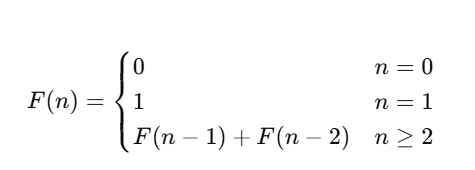
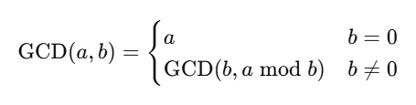
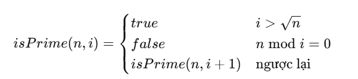
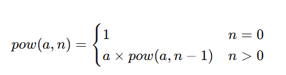

1. Dãy Fibonacci
Công thức đệ quy:
Bài tập: Tìm số Fibonacci thứ n bằng đệ quy.
2. Tìm Ước chung lớn nhất (ƯCLN)
Bài tập: Nhập hai số a và b, tính ƯCLN bằng đệ quy.
3. Kiểm tra số nguyên tố
Bài tập: Viết hàm đệ quy kiểm tra số nguyên tố.
4. Tính lũy thừa
Bài tập: Nhập a và n, tính a^n bằng đệ quy.
5. Tính tổng các chữ số của n
Bài tập: Viết hàm đệ quy tính tổng các chữ số của số nguyên dương n.
6. In chuỗi đảo ngược
Bài tập: Viết hàm đệ quy in ra chuỗi đảo ngược của một chuỗi nhập từ bàn phím.